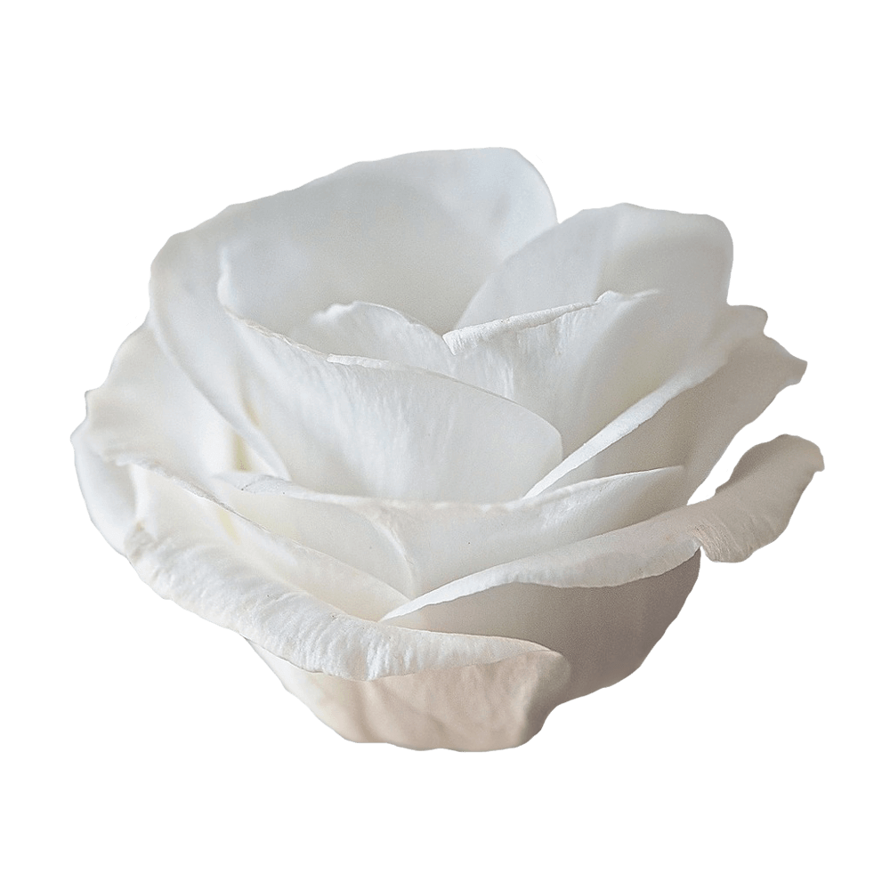

Esteban is a typeface intended to be used in texts, especially literature and poetry. Its a serif font with medium contrast, tall x height, medium compression, and robust serifs. It offers personality, readability and economy.
One of the most important features of Esteban is its stroke, that loses or gains weight in the stems. This feature was defined from the manuscripts of Jorge Alfredo Díaz Esteban, a writer who used a tool that can generate modulated strokes.
Font available from Google Fonts.
Eustoma is an eye-catching bloom that can stand out among other tropical beauties. Aside from being easy to grow and beautiful, the Eustoma also features a rich background history of symbolism you can still use today.
The Eustoma flower meaning list begins with a general feeling of happiness and joy. It’s the perfect flower for using in wedding, birthday, and party bouquets for this reason. Aside from joy, you can also use this flower to symbolize contentment, peace, and love for other people.
The Eustoma flower takes its name from ancient Greece, where the flower was popular as a love charm.